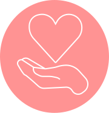

Servizio
prima visita
Perché scegliere di intraprendere questo percorso con me?
In cosa consiste la prima visita?
Ha una durata di circa un’ora e prevede un colloquio, volto ad indagare il tuo stile di vita generale, oltre che eventuali condizioni cliniche presenti o pregresse.
Per poter ottenere un quadro clinico completo, ricordati di portare gli esami del sangue e delle urine (possibilmente recenti), insieme all’elenco di farmaci ed integratori assunti.
Al termine di questo colloquio seguono le misurazioni antropometriche (peso, circonferenze, calcolo del BMI) e la valutazione della composizione corporea, tramite la bilancia impedenziometrica BIA 101 BIVA PRO. Infine definiamo l’obiettivo da raggiungere, in modo che io possa poi elaborare un piano alimentare bilanciato e personalizzato sulla base delle tue esigenze.
Il piano alimentare sarà consegnato entro una settimana lavorativa dalla prima visita.
Come prosegue il nostro percorso?
Ci rincontreremo durante la visita di controllo, in cui valutiamo insieme l’andamento del percorsop intrapreso. Ha una durata di circa 30 minuti e prevede nuovamente la rilevazione dei parametri antropometrici e la valutazione della composizione corporea.
Servizio
società sportive


Coltivo da sempre una profonda passione per gli sport di squadra, essendo stata una giocatrice di pallavolo professionista ed un’allenatrice del settore giovanile. Questo sport mi ha insegnato la determinazione nel raggiungere gli obiettivi prefissati, ma soprattutto il lavoro di squadra, che applico anche nello svolgimento della mia professione.
Come nutrizionista, ho scelto quindi di avvicinarmi all’ambiente sportivo grazie al corso di perfezionamento SANIS (Società di Nutrizione ed Integrazione Sportiva). Qui ho appreso come una corretta alimentazione sia fondamentale per ottimizzare la performance sportiva, per velocizzare il recupero in seguito ad uno sforzo e per prevenire l’insorgenza di infortuni.
Collaboro con diverse società sportive per la valutazione nutrizionale e la redazione di piani alimentari personalizzati, aiutando gli atleti e lo staff tecnico nella gestione di allenamenti e gare. Pensando poi alla palestra come un luogo in cui bambini ed adolescenti crescono ed imparano, organizzo incontri di educazione alimentare per il settore giovanile, insegnando ai giovani atleti ed alle loro famiglie a gestire l’alimentazione in base agli impegni sportivi.
Se sei uno sportivo o gestisci una società sportiva, ti aspetto in studio o in palestra per aiutarti a comprendere quanto sia importante il campo dell’alimentazione.
Servizio
prima visita

La gestione individuale del piano alimentare risulta sicuramente più complessa se inserita nel contesto
famigliare, caratterizzato da orari, esigenze e gusti diversi. Capendo a pieno la difficoltà, offro la possibilità di intraprendere un percorso di educazione alimentare esteso a tutta la famiglia, con la conseguente elaborazione di uno schema alimentare facilmente adattabile a tutti i suoi membri.
Durante il primo incontro indago lo stile di vita di ogni componente della famiglia, in modo da comprendere le rispettive esigenze ed elaborare poi un menù settimanale, ricco di ricette facili, veloci e gustose.
Nel successivo incontro tratteremo due argomenti fondamentali:Come comporre un pasto equilibrato
Analizzeremo insieme il “piatto sano”, imparando ad organizzare pasti equilibrati, anche con quello che si ha in frigo o in dispensa.
Cosa mettere nel carrello
Capiremo insieme come fare correttamente la spesa, imparando cosa non deve mai mancare nel carrello e soprattutto come leggere un’etichetta in maniera consapevole ed attenta.
Servizio
prima visita

Vi è mai capitato di farvi domande a tema alimentazione e non sapere dove cercare fonti attendibili per avere delle risposte?
Questo è il posto giusto!
Vi mostro qualche esempio di domande che ricevo di frequente:
“Vorrei cimentarmi in una maratona: cosa sarebbe meglio mangiare prima, durante e dopo l’allenamento o la gara?”
“Lavoro a turni e mangio spesso fuori casa: come posso organizzare i pasti al meglio?”
“Mi piacerebbe diventare vegetariano: devo integrare qualcosa?”
“Ho i valori ematici di colesterolo superiori al range: devo eliminare le uova?”
Con questo servizio potrai chiarire tutti i tuoi dubbi nel corso di una chiacchierata di circa 30 minuti.
Non riceverai un piano alimentare, ma risposte e consigli basati su evidenze scientifiche.